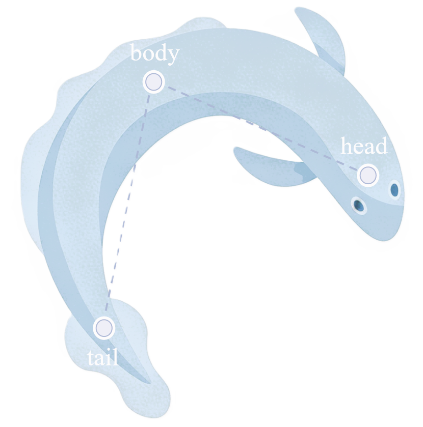

检测流程
01
先选择待处理视频，再选择右侧输入目录。
02
按阶段进入预处理、检测追踪或智能分析。
03
预处理完成后，文件浏览区会自动切到新的输出目录。
04
检测追踪运行时，可在阶段面板中查看状态并终止任务。
05
智能分析完成后，可使用左上角工具抽屉导出结果。
06
底部日志区会持续记录执行进度与错误反馈。
打开预处理目录
打开结果目录
另存为
AI智能分析
选择视频文件以预览(ゝ∀･)
选择视频
当前工作目录
输入源
选择文件夹
智析
当前运行
无

预处理
待选择输入
检测追踪
待选择输入
智能分析
待选择输入
← 返回阶段选择
展开后会在这里显示该阶段的状态、依赖与操作。
开始预处理
启动检测
启动分析
终止当前进程